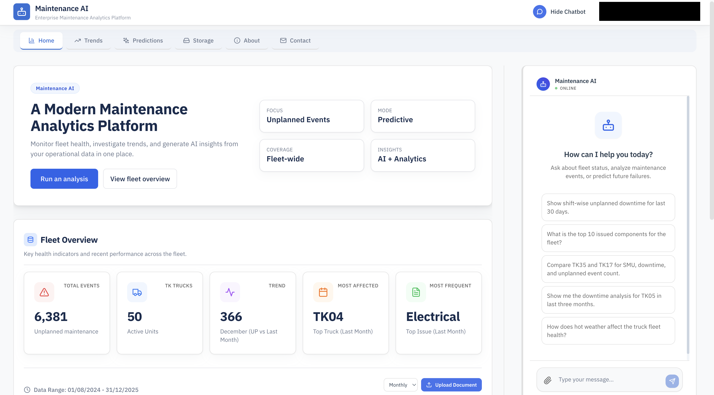

Project 01
Maintenance AI
An enterprise maintenance analytics platform that helps mining teams investigate fleet health and turn operational data into useful answers.

Outcome
20 min → 20 sec Maintenance information search timeI mapped pain points across maintenance, IT, and operations; designed agent actions for downtime, event, SLA, and component analysis; and supported testing, documentation, and report outputs.
- Role Product discovery, workflow design, technical delivery
- System RAG, SQL, tool calling, Azure, FastAPI, React